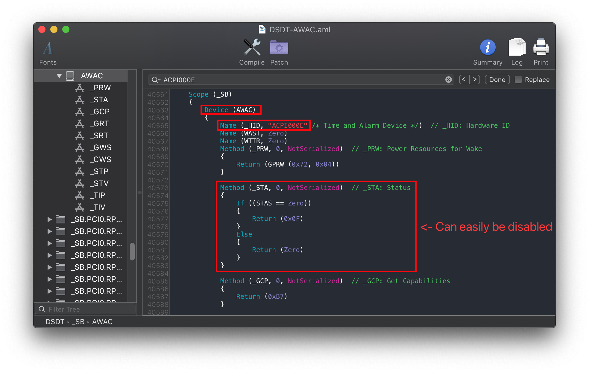

Last modified: Sun May 31 2020 05:55:38 GMT+0000 (Coordinated Universal Time)
Fixing System Clocks: Manual
Determining which SSDT you need
Finding which SSDT you need is quite easy actually, first open your decompiled DSDT you got from Dumping the DSDT and Decompiling and Compiling with either maciASL(if in macOS) or any other text editor if in Windows or Linux(VSCode has an ACPI extension that can also help).
Next search for ACPI000E. You should get something similar:

The above tells us a few things:
- We in fact do have an AWAC clock
- It can be easily disabled with STAS(if not, you can skip to here: RTC0 Method)
_STAis the device status, withZeromeaning it won't show up
But to double check, next search for PNP0B00:

And looks at that, we can in fact disable our AWAC and enable the RTC! If not skip to here: RTC0 Method
Now it's as simple as grabbing SSDt-AWAC.dsl and compile, no changes needed You can also use the below SSDT to the same effect:
_INI Edge Cases
Mainly seen on X299 refresh boards, there's already a Scope (_SB) { Method (_INI... in your DSDT. This means our SSDT-AWAC will conflict with the one found in our DSDT. For these situations, you'll want to remove Method (_INI, 0, NotSerialized) {} from the SSDT. You'll be left this this in the end:
DefinitionBlock ("", "SSDT", 2, "DRTNIA", "AWAC", 0x00000000)
{
External (STAS, IntObj)
Scope (_SB)
{
If (_OSI ("Darwin"))
{
STAS = One
}
}
}
RTC0 Method
This method is for those who either don't have a PNP0B00 device to re-enable or have no easy way(via STAS variable).
Finding the ACPI path
Assuming you've gotten your DSDT already opened from earlier, search for the following:
- Finding the LowPinCount path:
- Search
Name (_ADR, 0x001F0000)
- Search
- Finding the PCI path:
- Search
PNP0A08(If multiple show up, use the first one)
- Search
You should get something like the following show up:
| LPC Pathing | PCI Pathing |
|---|---|
 |
 |
From the above, we can see we have both PCI0 and LPC. Now we can head to the next stage
Edits to the sample SSDT
Now that we have our ACPI path, lets grab our SSDT and get to work:
By default, this uses PCI0.LPCB for the pathing. you'll want to rename accordingly.
Following the example from above, we'll be renaming it to PCI0.LPC:
Before:
External (_SB_.PCI0.LPCB, DeviceObj) <- Rename this
Scope (_SB.PCI0.LPCB) <- Rename this

Following the example pathing we found, the SSDT should look something like this:
After:
External (_SB_.PCI0.LPC, DeviceObj) <- Renamed
Scope (_SB.PCI0.LPC) <- Renamed

Compiling the SSDT
With the SSDT done, you're now ready to compile the SSDT!
Wrapping up
Once you're done making your SSDT, either head to the next page to finish the rest of the SSDTs or head here if you're ready to warp up: